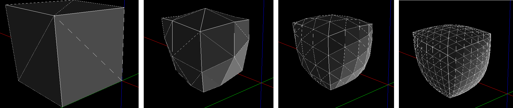
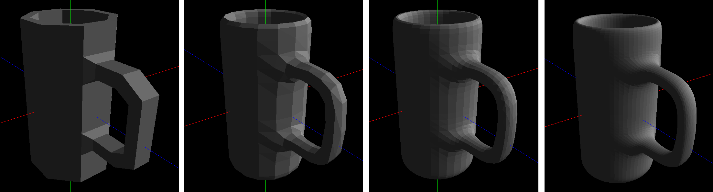
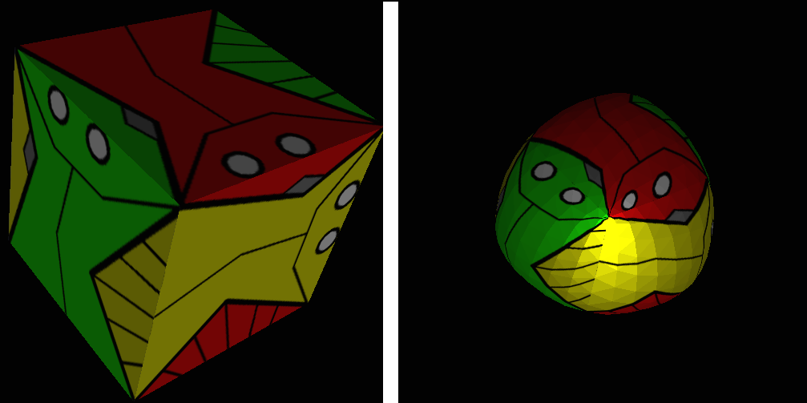

The first part of this assigment was implementing Loop's triangle Subdivision scheme. The data strutures I used are as follows: |
|||
class Vertex |
class Edge { Vertex *v[2]; Triangle *t[2]; int edgeId; } |
class Triangle { Vertex *v[3]; Triangle *t[3]; int index; } |
class SubdivMesh { vector<Vertex *> vertices; vector<Triangle *> triangles; vector<float3> normals; } |
The SubdivMesh object does not store edges, they are only used temporarily to (1) create the mesh from an input list of faces and vertices, and (2) to keep track of the edge vertices created in subdivision. The index number is used in Vertex and Triangle only to coordinate the parent mesh and the child mesh, it does not imply any connectivity information within the mesh. This may seem redundant since the vertices and faces already point to each other, but I could not find any easy alternative. One way to avoid this additional index would be to create the subdivided mesh with pointers to the parent mesh, but that complicates other things so I did not try it. My algorithm in brief is as follows: 1. Read from a file list of vertices (3 floats) and triangle faces (3 integers). This must represent a closed 2-manifold triangle mesh or the program will crash. 2. To create a SubdivMesh proceed as follows: Copy vertices into the SubdivMesh vector. Then for each triangle, point the triangle's v[] to the vertices and point vertex v[3]'s tri0 to the triangle. For the rest of the connectivity information create a set<Edge> edges. Loop through the triangles and search for edges 01, 12, 20; if edge found set edge's trinangle pointer and triangle's neighbor triangle pointers, if not found push in a new edge. Edge::edgeId stores 0,1 or 2 if the edge is 01, 12 or 20 in its first triangle t[0]. 3. Begin subdivision. This routine returns a completely new mesh while leaving the parent mesh unchanged. Allocate a new SubdivMesh by first creating a vertex vector (of blank vertices) of same length as parent mesh, and a triangle vector 4x in length as parent vector. Note that a triangle with index i in the parent mesh corresponds to indices 4i+j (j=0,1,2,3) in the child mesh. 4. For each vertex in the parent mesh, set the locations of the new vertex points in the child mesh by finding the 1-ring of vertices around this vertex. Use a weight 5/8 for the vertex and 3/8 for the centroid of the 1-ring. 5. To create the new edge-points, a map<Edge, Vertex *> edgeVerts is required to avoid processing a single edge multiple times. Each edge associates with a single new edge vertex. Loop through the parent mesh's triangle, and search for edges 01, 12, 20; if not found create a new edge vertex by weighting the edge end-points by 3/8 each and the other 2 vertices of the edge's t[] by 1/8 each. 6. To complete the connectivity information in the child mesh, first point the vertex-points created in step 3 with their tri0s. Use the Triangle::index data to find the triangle in the child mesh. 7. For each triangle in the parent mesh, point the 4 corresponding triangles in the child mesh to each other. To set up the additional connections between sub-triangles of neighboring triangles in the parent mesh, use Triangle::index is required. 8. Lastly, connect each new triangle with the new vertices. The Vertex::index data is required to convey this connectivity information from the parent mesh to the child mesh. 9. To compute additional subdivision levels repeat step 3-8 above. 10. Display everything using OpenGl's GlBegin(GL_TRIANGLES). Simple diffuse shading can be computed manually using the SubdivMesh normals. |
|||
Example results: (1) Cube: This is a simple test case, note that the vertices with valence 3 behave differently from the regular vertices.  (2) Cup: The base mesh was desinged in Autodesk Maya. Edges are not shown for clarity.  |
|||
The second part of the assignment is to apply smooth textures to our Subdivision Surfaces. This simply requires interpolating the texture coordinates of each triangle face in the base mesh to the 4 child faces. The vertex-point texture coordinates do not change, the edge-poin texture coordinates are the mean values of those at the edge end-vertices. (1) Textured Cube: |
|||
|  | |||